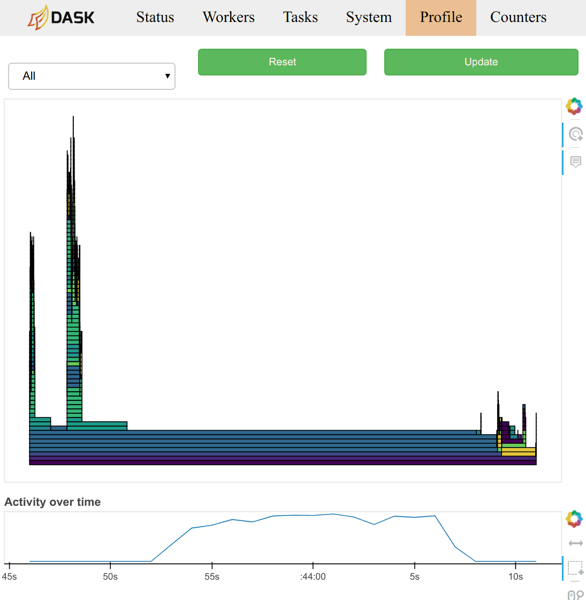

Parallelisation¶

import sys
IN_COLAB = 'google.colab' in sys.modules
if IN_COLAB:
%pip install dask[dataframe] joblib ray
What is it?¶
Parallelisation divides a large problem into many smaller ones and solves them simultaneously.
This divides up the time/space complexity.
These divided up tasks are centrally managed by a scheduler.
Can split the work across:
Multiple processes (cores)
A process is the instance of a computer program that is being executed by one or many threads.
Useful for compute-bound problems.
Multiple threads (parts of processes)
A thread of execution is the smallest sequence of programmed instructions.
Useful for memory-bound problems.

Parallelising a Python?¶
Python itself is not designed for massive scalability and controls threads preemptively using the Global Interpreter Lock, GIL.
(The GIL prevents running the bytecode on mutliple threads simutaneously.)
This has lead many libraries to work around this using C/C++ backends.
Some options include:
multiprocessing for creating a pool of asynchronous workers.
joblib for creating lightweight pipelines that help with embaressingly parallel tasks.
asyncio for concurrent programs, especially ones that are input/output bound.
concurrent.futures for launching parallel tasks.
These options work well for the CPU cores on your machine, though not really beyond that.
Dask¶
Dask has great features, helpful documentation, and a familiar API.
It works through creating and computing task graphs.
Task graphs have nodes (functions) and edges (objects).
For example, the task graph might be:
Embarrassingly parallel (apply one function to many pieces of data independently)
MapReduce (map a function to the data and reduce / summarise the output)

These task graphs are executed by a scheduler.
The resources used by this scheduler are managed by a cluster.
Note, this is separate to ARC’s scheduler.
There are two main types of Dask scheduler which can deploy jobs:
-
Cluster manager:
LocalCluster()Simpler.
For your laptop or a local server.
Test things out here first.
-
Cluster manager:
SGECluster(),SLURMCluster()More complex.
For a cluster on a high performance computer (e.g., SGE, SLURM), Kubernetes, or cloud.
Once working correctly on a single machine, move over to distributed.

Single machine¶
if not IN_COLAB:
from dask.distributed import Client, LocalCluster
cluster = LocalCluster()
client = Client(cluster)
# if not in colab, can render the client and cluster information
client
Client
Client-392506a0-9020-11ec-8fc0-000d3a7a17b8
| Connection method: Cluster object | Cluster type: distributed.LocalCluster |
| Dashboard: http://127.0.0.1:8787/status |
Cluster Info
LocalCluster
a635d316
| Dashboard: http://127.0.0.1:8787/status | Workers: 2 |
| Total threads: 2 | Total memory: 6.78 GiB |
| Status: running | Using processes: True |
Scheduler Info
Scheduler
Scheduler-e4e8888d-6726-416d-a2f1-e0f4438b1c25
| Comm: tcp://127.0.0.1:37761 | Workers: 2 |
| Dashboard: http://127.0.0.1:8787/status | Total threads: 2 |
| Started: Just now | Total memory: 6.78 GiB |
Workers
Worker: 0
| Comm: tcp://127.0.0.1:34053 | Total threads: 1 |
| Dashboard: http://127.0.0.1:35015/status | Memory: 3.39 GiB |
| Nanny: tcp://127.0.0.1:38589 | |
| Local directory: /home/runner/work/swd6_hpp/swd6_hpp/docs/dask-worker-space/worker-d7z7u02b | |
Worker: 1
| Comm: tcp://127.0.0.1:37549 | Total threads: 1 |
| Dashboard: http://127.0.0.1:39065/status | Memory: 3.39 GiB |
| Nanny: tcp://127.0.0.1:45497 | |
| Local directory: /home/runner/work/swd6_hpp/swd6_hpp/docs/dask-worker-space/worker-laoyft35 | |
If want multiple threads, then could use keyword arguments in Client instance:
client = Client(processes=False, threads_per_worker=4, n_workers=1)
Note (important!), always need to close down the client and cluster at the end:
client.close()
cluster.close()
Applications¶
dask.array for NumPy
dask.dataframe for Pandas
dask.bag to iterate over a bag of independent objects (embarrassingly parallel).
Dask is under the hood for many libraries e.g., xarray, iris, scikit-learn.
import numpy as np
import dask.array as da
Here, out example is going to do some maths on arrays. Don’t worry about what it is. Just focus on the Dask bits.
Warning
Parallelised code often introduces overheads e.g., Dask’s scheduler and client. For small jobs, these can take up a large relative portion of the resources, making the job inefficient. It is worthwhile ensuring that the job is big enough that these overheads are small in comparison. The examples here in this tutorial are on the small side for teaching purposes.
x = da.random.random(
(10_000, 10_000, 10),
chunks=(1_000, 1_000, 5))
y = da.random.random(
(10_000, 10_000, 10),
chunks=(1_000, 1_000, 5))
z = (da.arcsin(x) + da.arccos(y)).sum(axis=(1, 2))
Local profiling and diagnostics¶
Many of the profiling tools we looked at earlier don’t work well with parallel code.
Dask provides its own useful tools.
Visualise the task graph¶
Before executing the computation, you could .visualise() the task graph.
This can help find potential bottlenecks.
For example:
z.visualize()
dot: graph is too large for cairo-renderer bitmaps. Scaling by 0.333945 to fit

Interactive dashboard¶
The Dask dashboard provides live feedback and diagnostics in many plots and tables using Bokeh.
First, get the Dask dashboard address (normally http://localhost:8787/status):
print(client.dashboard_link)
http://127.0.0.1:8787/status
Either show in a browser or copy the address into the Dask Lab Extension.
The Dask Lab Extension should now show all of the client and cluster information.
You can place some of these panels to the side e.g.,:
Task Stream
Progress
Workers
Now, when you .compute() the task graph, you can view the progress in these dashboard panels.
result = z.compute()
---------------------------------------------------------------------------
KeyboardInterrupt Traceback (most recent call last)
/tmp/ipykernel_4032/4023212076.py in <module>
----> 1 result = z.compute()
/usr/share/miniconda/envs/swd6_hpp/lib/python3.9/site-packages/dask/base.py in compute(self, **kwargs)
286 dask.base.compute
287 """
--> 288 (result,) = compute(self, traverse=False, **kwargs)
289 return result
290
/usr/share/miniconda/envs/swd6_hpp/lib/python3.9/site-packages/dask/base.py in compute(*args, **kwargs)
568 postcomputes.append(x.__dask_postcompute__())
569
--> 570 results = schedule(dsk, keys, **kwargs)
571 return repack([f(r, *a) for r, (f, a) in zip(results, postcomputes)])
572
/usr/share/miniconda/envs/swd6_hpp/lib/python3.9/site-packages/distributed/client.py in get(self, dsk, keys, workers, allow_other_workers, resources, sync, asynchronous, direct, retries, priority, fifo_timeout, actors, **kwargs)
2720 should_rejoin = False
2721 try:
-> 2722 results = self.gather(packed, asynchronous=asynchronous, direct=direct)
2723 finally:
2724 for f in futures.values():
/usr/share/miniconda/envs/swd6_hpp/lib/python3.9/site-packages/distributed/client.py in gather(self, futures, errors, direct, asynchronous)
1975 else:
1976 local_worker = None
-> 1977 return self.sync(
1978 self._gather,
1979 futures,
/usr/share/miniconda/envs/swd6_hpp/lib/python3.9/site-packages/distributed/client.py in sync(self, func, asynchronous, callback_timeout, *args, **kwargs)
863 return future
864 else:
--> 865 return sync(
866 self.loop, func, *args, callback_timeout=callback_timeout, **kwargs
867 )
/usr/share/miniconda/envs/swd6_hpp/lib/python3.9/site-packages/distributed/utils.py in sync(loop, func, callback_timeout, *args, **kwargs)
322 else:
323 while not e.is_set():
--> 324 e.wait(10)
325 if error[0]:
326 typ, exc, tb = error[0]
/usr/share/miniconda/envs/swd6_hpp/lib/python3.9/threading.py in wait(self, timeout)
572 signaled = self._flag
573 if not signaled:
--> 574 signaled = self._cond.wait(timeout)
575 return signaled
576
/usr/share/miniconda/envs/swd6_hpp/lib/python3.9/threading.py in wait(self, timeout)
314 else:
315 if timeout > 0:
--> 316 gotit = waiter.acquire(True, timeout)
317 else:
318 gotit = waiter.acquire(False)
KeyboardInterrupt:
The Dashboard shows:
Task Stream
Each row is the activity on a process (core) or thread within the cluster over time.
Each rectangle is one task.
The different colours and different types of work:
Idle (white)
Serialisation (grey)
Communication (red)
Disk input/output (orange)
Other tasks (other colours)

Progress
Progresses from left to right, with the task complete / total tasks.
Same colours as above, with grey for ready to run, darker colours for data in memory, and lighter colours for complete tasks released from memory.

Workers
Shows the CPU percentage use (also per worker).
Shows the memory percentage use (also per worker).
Question
What do these specific results show?
Solution
Our specific results show us that:
All workers were full with numerical tasks (i.e., no white/red blocks).
This utilises the CPU cores well.
There are lots of other useful information, such as (video demonstration):
-
Statistical (sampling every 10ms) capture of the call stack from the Dask schedulers perspective

System
Logs
Individual workers
etc.
Exercise
Which is of the 3 examples below is most efficient and why?
Hint
Use %%time.
# Example 1: Many, small chunks
x = da.random.random(10_000_000, chunks=(1_000,))
y = x.sum().compute()
# Example 2: Fewer, large chunks
x = da.random.random(10_000_000, chunks=(100_000,))
y = x.sum().compute()
# Example 3: NumPy
x = np.random.random(10_000_000)
y = x.sum()
Solution
Dask introduces overhead to parallelise work (i.e., the scheduler and client).
Hence, Dask is inefficient (i.e., the workers are under-utilised) when doing lots of very small computations.
Consider using fewer, larger chunks to reduce this overhead.
Consider if parallelisation is really needed.
If you want a shareable report of this interactive dashboard, you can use the performance report context manager.
from dask.distributed import performance_report
with performance_report(filename="dask-report.html"):
result = z.compute()
Can then view this performance report here or in a browser:
from IPython.display import display, HTML
display(HTML(filename='dask-report.html'))
This can also be shared with colleagues:
Create a Gist.
Copy the contents of the
dask-report.htmlinto here.Host the file e.g., provide the
Rawaddress to raw.githack.com.
For example, for this report click here.
Static profilers¶
Returns local diagnostics that can viewed in the browser.
Profiler()for task execution.ResourceProfiler()for resource use.CacheProfiler()for scheduler cache.
Note, the profilers are just context managers, so can use many in a with block.
from dask.diagnostics import Profiler, ResourceProfiler, CacheProfiler, visualize
with Profiler() as prof, ResourceProfiler(dt=0.25) as rprof, CacheProfiler() as cprof:
result = random_array_reconstructed.compute()
visualize([prof, rprof, cprof])
When happy that everything is correct on a single machine, can move over to distributed.
Remember, to close down the local client and cluster.
if not IN_COLAB:
client.close()
cluster.close()
Distributed¶
Dask-MPI¶
Uses the mpi4py package and MPI to distribute the workers (not communication).
MPI (Message Passing Interface) is where many systems send and receive messages (sometimes containing data) between processes with their own (private) memory.
It’s suitable for problems that require distributed memory. For example, if your computations are mostly Python code that don’t release the GIL.
MPI is parallelism between nodes (multi-process).

mpi4py provides MPI for Python, allowing Python applications to use multiple processes.
To use MPI in batch jobs, you can specify the number of cores using -pe ib via:
#$ -pe ib np
When you need to share memory across chunks, you can use use OpenMP (Open Multi-Processing).
It’s suitable for problems that are mostly numeric (e.g., NumPy and Pandas) that release the GIL entirely.
OpenMP is parallelism within nodes (multi-thread).

To use OpenMP in batch jobs, you can specify the number of cores using -pe smp via:
#$ -pe smp np
Submission script¶
Initialise a Dask MPI session and connect a client.
The initialisation launches the Dask Scheduler on MPI rank 0, the user’s Client code on MPI rank 1, and the Dask Workers on MPI ranks 3 and above.
So, for 8 processes, there will be 6 workers.
from dask_mpi import initialize
from dask.distributed import Client
initialize()
client = Client()
Then add in your Dask work.
Here, we use a bigger job for Dask. This increases efficiency, by reducing the relative size of Dask’s overheads (scheduler and client).
Ensure to have the .compute() call within the performance_report context manager to capture the diagnostics.
import dask.array as da
from dask.distributed import performance_report
def example_function():
x = da.random.random(
(100_000, 100_000, 10),
chunks=(10_000, 10_000, 5))
y = da.random.random(
(100_000, 100_000, 10),
chunks=(10_000, 10_000, 5))
z = (da.arcsin(x) + da.arccos(y)).sum(axis=(1, 2))
with performance_report(filename="dask-report_mpi.html"):
result = z.compute()
if __name__ == "__main__":
example_function()
The full script can be found in example_dask_mpi_sge.py.
Batch job¶
Setup the resource request from the HPC scheduler:
#!/bin/bash -l
#$ -cwd -V
#$ -l h_rt=01:00:00
#$ -pe smp 8
#$ -l h_vmem=24G
Load an MPI module e.g.,:
module load intel openmpi
Warning
Issues can arise from oversubscribing threads.
# ensure linear algebra libraries using 1 thread
# https://docs.dask.org/en/stable/array-best-practices.html#avoid-oversubscribing-threads
export OMP_NUM_THREADS=1
export MKL_NUM_THREADS=1
export OPENBLAS_NUM_THREADS=1
Load the conda environment e.g.,:
conda activate swd6_hpp
Ensure that number of cores match in the requested resources at the top and in the mpirun call e.g.,:
#$ -pe smp 8
mpirun -np 8 python example_dask_mpi_sge.py
The full script can be found in example_dask_mpi_sge.bash.
Dask-Jobqueue¶
Dask-Jobqueue support a variety of resource managers (e.g., SGE, SLURM).
We recommend you use it for batch jobs on the HPC, rather than interactive jobs.
Though it does have lots of nice features for interactive work e.g., adaptive dynamic scaling of workers.
Setup the config¶
The example below is for an SGE scheduler (ARC).
The full script can be found in ~/.config/dask/jobqueue.yaml.
Here are examples for different HPC systems.
jobqueue:
sge:
name: dask-worker
# Dask worker options
cores: 1 # Total number of cores per job
memory: '1 GB' # Total amount of memory per job
processes: 1 # Number of Python processes per job
interface: ib0 # Network interface to use like eth0 or ib0
death-timeout: 60 # Number of seconds to wait if a worker can not find a scheduler
local-directory: null # Location of fast local storage like /scratch or $TMPDIR
# SGE resource manager options
shebang: "#!/usr/bin/env bash"
queue: null
project: null
walltime: '01:00:00'
extra: []
env-extra: []
job-extra: []
log-directory: null
resource-spec: null
distributed:
worker:
memory:
target: false # dont spill to disk
spill: false # dont spill to disk
pause: 0.80 # pause memory execution at 80% use
terminate: 0.95 # restart the worker at 95% use
Submission script¶
The distributed client and cluster are created within a Python script.
The resource requirements per worker are defined, along with the number of workers.
Here, the scheduler and client run as independent jobs, in contrast to Dask-MPI where they go to worker ranks 0 and 1, respectively (reducing the total worker count by 2).
Move the scheduler and client to the login node somehow …
The full script can be found in example_dask_jobqueue_sge.py file.
from dask.distributed import Client
from dask_jobqueue import SGECluster
def setup_client_and_cluster(
number_processes=1, number_jobs=1, walltime="00:01:00", memory=1
):
"""
Setup Dask client and cluster.
Ensure that the number of workers is the right amount for your job and will be fully utilised.
"""
print("Setting up Dask client and cluster ...")
number_workers = number_processes * number_jobs
# these are the requirements for a single worker
cluster = SGECluster(
interface="ib0",
walltime=walltime,
memory=f"{memory} G",
resource_spec=f"h_vmem={memory}G",
scheduler_options={"dashboard_address": ":2727"},
job_extra=[
"-V", # export all environment variables
f"-pe smp {number_processes}",
f"-l disk={memory}G"
],
local_directory=os.sep.join([os.environ.get("PWD"), "dask-worker-space"]),
)
client = Client(cluster)
cluster.scale(jobs=number_jobs)
print("The resources of each worker are: ")
print(cluster.job_script())
return client, cluster
def main():
client, cluster = setup_client_and_cluster(
number_processes=1,
number_jobs=8,
walltime="01:00:00",
memory=24,
)
print("Main processing ...")
example_function()
print("Finished processing.")
client.close()
cluster.close()
print("Closed client and cluster.")
Batch job¶
Submit this job to the queue.
This is similar to for Dask-MPI, apart from you don’t need to load the MPI modules, or have the mpirun call before executing the Python script.
The full script can be found in example_dask_jobqueue_sge.bash.
#!/bin/bash -l
#$ -cwd -V
#$ -l h_rt=01:00:00
#$ -pe smp 1
#$ -l h_vmem=1G
# ensure linear algebra libraries using 1 thread
# https://docs.dask.org/en/stable/array-best-practices.html#avoid-oversubscribing-threads
export OMP_NUM_THREADS=1
export MKL_NUM_THREADS=1
export OPENBLAS_NUM_THREADS=1
conda activate parallelisation_tests
python example_dask_jobqueue_sge.py
Distributed profiling and diagnostics¶
Similar as for Dask-MPI, you can view the Dask performance report here.
The Dask-Jobqueue method create and schedules the workers within the Python script. This additional overhead takes extra time relative to Dask-MPI, which has the 8 workers scheduled by the HPC.
Functions become Tasks¶
Tasks in Dask¶
if not IN_COLAB:
from dask.distributed import Client
client = Client()
def double(x):
return x * 2
double(5)
Submitting this function (task) to the client, runs it in a background thread or process:
future = client.submit(double, 10)
future
Return the result of this future object using .result():
future.result()
You can also map a function (task) to many inputs using Dask Bags.
Dask Bags allow operations like map, filter, fold, and groupby on collections of generic Python objects.
import dask.bag as db
You can create Dask Bags from a sequence, reading from files, or from delayed objects.
bag = db.from_sequence(range(10))
bag
doubled_bag = bag.map(double)
doubled_bag
As earlier, call .compute() to execute the computation (i.e., the mapped function):
doubled_bag.compute()
Classes become Actors¶
Actors enable stateful computations. They are pointers to remote objects. You can call methods on these remote objects.
Actors in Dask¶
class Counter:
""" A simple class to manage an incrementing counter """
n = 0
def __init__(self):
self.n = 0
def increment(self):
self.n += 1
return self.n
def read(self):
return self.n
Create an actor on a worker using the actor=True keyword argument:
future = client.submit(Counter, actor=True)
Get back a pointer to that object:
counter = future.result()
counter
Then call the remote method on that pointer:
future = counter.increment()
future
And return the result:
future.result()
if not IN_COLAB:
client.close()
Ray¶
Another great library for parallel computing in Python is Ray.
Ray provides a simple, universal API for building distributed applications.
Ray will automatically detect the available GPUs and CPUs on the machine.
You can also specify required resources.
First, initialise Ray.
import ray
ray.init()
Ray has many great features, similar to Dask.
This includes:
Tasks in Ray¶
Parallelise functions by adding @ray.remote decorator.
@ray.remote
def increment(x):
return x + 1
Then instead of calling it normally, use the .remote() method.
futures = [increment.remote(x) for x in range(4)]
This yields a future object reference that you can retrieve with ray.get(object).
print(ray.get(futures))
Actors in Ray¶
Classes (actors) are parallelised in the same way as functions (tasks) in Ray i.e., by using the @ray.remote decorator:
@ray.remote
class Counter:
""" A simple class to manage an incrementing counter """
def __init__(self):
self.n = 0
def increment(self):
self.n += 1
return self.n
def read(self):
return self.n
Similar to before, construct an actor instance using .remote()
counters = [Counter.remote() for i in range(4)]
On each actor, call remote methods (increment and read), and get the future objects
[counter.increment.remote() for counter in counters]
futures = [counter.read.remote() for counter in counters]
print(ray.get(futures))
Other key features of Ray:
ray.put()¶
Put a value in the distributed object store.
put_id = ray.put(my_object)
ray.get()¶
Get an object from the distributed object store, either placed there by
ray.put()explicitly or by a task or actor method, blocking until object is available.thing = ray.get(put_id)
ray.wait()¶
Wait on a list of ids until one of the corresponding objects is available (e.g., the task completes). Return two lists, one with ids for the available objects and the other with ids for the still-running tasks or method calls.
finished, running = ray.wait([train_id, track_id])
Ray’s multiprocessing¶
To scale beyond one machine and generally manage a pool of processes.
Replace:
from multiprocessing.pool import Pool
With:
from ray.util.multiprocessing.pool import Pool
When finished, remember to shut down the Ray connection.
ray.shutdown()
Parallel Numba¶
If code contains operations that are parallelisable (and supported) Numba can compile a version that will run in parallel on multiple threads.
This parallelisation is performed automatically and is enabled by simply adding the keyword agurment parallel=True to @njit.
import numpy as np
from numba import njit
x = np.arange(1.e7)
@njit()
def ident_parallel(x):
return np.cos(x) ** 2 + np.sin(x) ** 2
%%timeit
ident_parallel(x)
@njit(parallel=True)
def ident_parallel(x):
return np.cos(x) ** 2 + np.sin(x) ** 2
%%timeit
ident_parallel(x)
Exercise¶
…
Further information¶
Useful resources¶
Good practises¶
Start small.
Test out ideas locally first, on laptop (or other single machine).
Avoid very large chunks / partitions / task graphs (a good first option is to allow auto-chunking).
Only use parallelisation (e.g., Dask) when needed, then move back to normal Python ( / NumPy / Pandas).
Persist data in memory (RAM) where can, as faster than accessing from disk.
Load data with the parallel library (e.g., Dask), rather than just passing data to it to manage.
Call compute once, on lots of computations.
Avoid global state.
Don’t modify the data in place.
Avoid moving large pieces of data around (i.e., bring analysis to the data on the cluster).
More information:
Dask, Dask Array, Dask DataFrame Dask Delayed
Other options¶
-
Use Ray as a backend for Dask tasks.
Dask dispatches tasks to Ray for scheduling and execution.
-
Swap out the library import and use the same API.
Uses Ray or Dask to easily speed up your Pandas code.
To use Modin, simply replace the import and use Pandas API as normal.
-
A tensor-based unified framework for large-scale data computation which scales numpy, pandas, scikit-learn and many other libraries.
Swap out the library import, use the same API, and add
.execute().Mars Tensor for NumPy.
Mars DataFrame for Pandas.
Mars can also use Ray as the backend (instructions).
-
Lightning-fast DataFrame library for Rust and Python.
-
Combines your Spark and Ray clusters, making it easy to do large scale data processing using the PySpark API and seemlessly use that data to train your models using TensorFlow and PyTorch.
-
For stateful remote control of several running ipython sessions.
-
For batch processing using MapReduce from Hadoop.
-
For using Apache Spark in Python, an all-in-one MapShuffleReduce system.
-
For real-time streaming of data using Apache Storm.
Resources¶
Concurrency can also run different tasks together, but work is not done at the same time (concurrency from the ground up).
Asynchronous (multi-threading), useful for massive scaling, threads controlled explicitly.